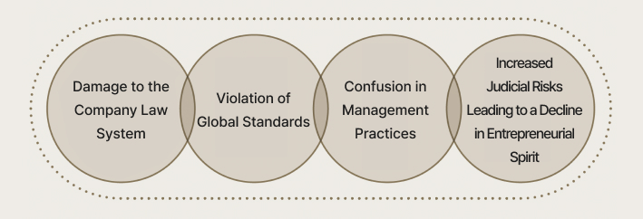

Shaking the Principles of the Free Market Economy
Exploring the Expansion of Directors’
Duty of Loyalty
By Professor Jae-yeol Kwon of Kyung Hee University Law School
Proposed Amendment to the Commercial Act with the Opening of the 22nd National Assembly
The current Commercial Act imposes a duty of loyalty on directors to perform their duties in good faith for the interest of the company in accordance with statutes and the articles of incorporation (Article 382-3). In March 2022, Yong-woo Lee of the Democratic Party proposed an amendment to Article 382-3. The purpose of this amendment was to address the issue where, during capital transactions such as physical divisions, the actions of directors might have no impact on the company itself but could result in the transfer of wealth among shareholders, potentially causing harm to specific shareholders.
As the current law does not consider this to be a breach of duty, directors would bear no responsibility for any resulting damages. Lee’s proposed amendment aimed to impose on directors a duty of protection toward shareholders in cases where conflicts of interest arise between controlling shareholders and general shareholders. Specifically, the amendment stated that “Directors shall perform their duties in good faith for the proportional benefit of shareholders and the company in accordance with statutes and the articles of incorporation.” This key provision sought to expand the scope of directors’ duty of loyalty from solely the company, as defined under the current law, to include as well the proportional interests of shareholders. Although this amendment was automatically discarded with the conclusion of the 21st National Assembly, it was reintroduced by Jun-ho Jeong of the Democratic Party in the 22nd National Assembly and is currently under review. While the intent of the amendment is clear, holding some significance, it has faced much criticism as discussed below due to the difficulty of ensuring consistency with the existing legal framework.
Comparison of Old and New Provisions
Current
Article 382-3 (Duty of Loyalty by Directors) Directors shall perform their duties in good faith for the interest of the company in accordance with statutes and the articles of incorporation.
Proposed Amendment
Article 382-3 (Duty of Loyalty by Directors) Directors shall perform their duties in good faith for the proportional benefit of shareholders and the company in accordance with statutes and the articles of incorporation.
Incompatibility with Article 382-3 of the Commercial Act
In December 1997, Korean government faced an unprecedented crisis of national bankruptcy due to a foreign exchange crisis, leading to the receipt of emergency financial aid from the IMF. To overcome this national economic crisis, the capacities of citizens were mobilized in various ways. In this historical context, Article 382-3 of the Commercial Act was established with the main purpose of enhancing the accountability of directors in order to improve the transparency of corporate management and promote the innovation of the governance structure of stock companies.
Article 382-3 fundamentally serves to prevent conflicts of interest between the “company” and the “directors.” For instance, if directors set an excessively high salary and wield influence to obtain approval from the shareholders’ meeting, and the company subsequently pays that salary to the directors, a conflict of interest arises between the company and the directors, invoking Article 382-3. The proposed amendment stipulates that directors bear a duty of loyalty for the proportional benefit of shareholders, which presupposes a situation of conflict of interest between “shareholders and directors.” Since directors do not have a direct contractual relationship with shareholders, however, it is challenging to envision scenarios where a conflict of interest between shareholders and directors occurs. Therefore, including the duty of loyalty of directors toward shareholders within the scope of conflicts of interest as defined by Article 382-3—which concerns the relationship between the company and its directors—is problematic.
Directors as Agents of the Company
Directors are agents who perform duties on behalf of the company. The company evaluates whether the directors have diligently performed their obligations and pays a salary from the company’s account to those directors who have faithfully executed their duties. If directors were to be obligated directly to shareholders, they would inevitably become the agents of the shareholders, which would be excessively radical and potentially destructive. Even setting aside whether shareholders possess the ability to assess a director’s performance of duties, one might question how many shareholders would be willing to pay a director’s salary from their personal accounts.
Some might argue that, because shareholders are owners of the company, allowing them to withdraw funds from the company’s account to pay the directors’ salary is no different from the shareholders paying the directors directly. However, the Commercial Act does not explicitly state that shareholders are the owners of the company. Shareholders have merely contributed seed capital for the establishment and operation of the company.
If shareholders were truly the owners of the company, they should be entitled to withdraw their contributions at any time, but this is not permitted under the current Commercial Act. Additionally, shareholders have no authority to intervene even if company assets are encroached upon improperly. They are merely owners of shares that prove their investment. Supreme Court precedents also clarify that shareholders of a stock company have an interest in the management as shareholders; in terms of the company’s property relations, however, they possess only factual, economic, or general abstract interest, lacking any specific or legal interest. Therefore, it is difficult to accept that the proposed amendment equates the proportional interests of shareholders with those of the company and lists them in parallel.
Moreover, such an amendment disregards the corporate nature of the company and raises concerns about directors bearing a duty of loyalty to individuals other than the company itself, which they represent as agents. If directors are to fulfill obligations to shareholders rather than the company while receiving compensation from the company, this could even put them at risk of being penalized for embezzlement.
A stock company is an independent legal entity distinct from its shareholders. To impose on directors a duty of loyalty toward shareholders who have no legal interest in the company’s assets is nothing short of absurd coercion.
Inefficiency of Unanimity
Assuming two scenarios based on a situation of management rights disputes, let us consider the following: First, suppose a company successfully maintains its management rights by selling its treasury shares to a third party in order to defend against a hostile takeover. Even if the company’s stock price declines as a result of resolving the dispute, the controlling shareholder may feel satisfied with the successful defense of management rights, whereas minority shareholders may feel that their interests have been harmed due to the drop in stock price. Conversely, if the stock price rises due to a management rights dispute and the directors fail to defend management rights in order to protect minority shareholders, the interests of the majority shareholders may diminish. The principle of unanimity is the most fundamental rule of decision-making that can be adopted by a deliberative body. However, this principle fundamentally possesses a risk-averse nature, as actions can only be taken if all members are united in their intent. Expanding the directors’ duty of loyalty to protect the proportional interests of shareholders is tantamount to instituting a rule of unanimity. In a company with 100 shareholders, if 99 shareholders express their intention to vote in favor of a particular proposal with one shareholder opposing it, how should the directors act? If the directors decide to vote in favor according to the wishes of the 99 shareholders, they may be held liable by the opposing shareholder for failing to protect that shareholder’s proportional interests. On the other hand, if the directors make a decision based on the wishes of the single opposing shareholder, they may find themselves in a stalemate, with the 99 shareholders questioning their accountability. The directors will be subjected to daily lawsuits like a punching bag due to non-performance of their duties, and they will likely have to go back and forth in court facing charges of embezzlement. In such a situation, unless all shareholders’ intentions are unified, the directors will find themselves unable to make decisions. Given the reality that proposals presented to the board cannot always obtain unanimous consent from all shareholders, it becomes evident that the company cannot operate effectively. In such extreme situations, in order to attract capable directors, the company may have no choice but to take out substantial executive liability insurance. The premiums paid by the company to the insurance company for this liability insurance will ultimately be passed on to product prices, resulting in a decline in international competitiveness of its goods.
Concerns Regarding the Proposed Amendment to the Commercial Act
Contradiction of the Proposed Amendment
When there are major shareholders who desire long-term investments and minority shareholders who prefer short-term gains, each position has its own legitimacy, and one cannot unconditionally criticize the other. Given the differing opinions between major and minority shareholders, to whom should the directors owe their loyalty? According to the Chinese historian Sima Qian in Records of the Grand Historian, when the Yan state invaded the Qi state, Wang Zhi was advised to defect to Yan. However, he declared, “A loyal minister does not serve two rulers,” choosing instead to take his own life. Under the duty of loyalty as stipulated in the proposed amendment, which calls for serving all shareholders equally, it is clear that directors cannot truly be a loyal minister. Instead, they would fall into a state of constant concern over the potential for litigation. In such a scenario, who would willingly step forward to engage in innovative management activities? For these reasons, the proposed amendment, which establishes directors’ duty of loyalty in relation to the proportional interests of shareholders, cannot be accepted.